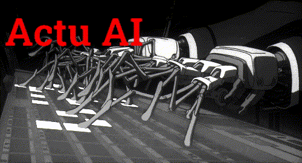

Optimus, le robot Tesla - Le Parisien. Les robots Tesla Optimus étaient tous contrôlés à distance par des humains lors de l'événement.

Novembre 2024
Open AI fait mine de bouder l’UE
Découverte : Intrication de quarks
Le réalisateur de Terminator mise sur L’IA
Invention : Film photo-électrique ultrafin
Open AI bloque peu de temps le déploiement de Chatgpt voice dans l'UE
La Législation de protection des données personnelles serait en cause, Open AI voit L’Europe comme une zone juridiquement incertaine. Il ne sera débloqué que 15 jours plus tard.
En route vers l'intrication macro
Pour la première fois, des équipes du Large Hadron Collider du CERN sont parvenues à démontrer l'intrication d'un quark top avec son antiparticule, l'antiquark top. Jamais encore l'intrication n'avait été observé sur des particules aussi massives.
Source
- Fabrice Nicot - 01 octobre 2024
- Sciences et Avenir - Fondamental - Particules
- Science et Avenir

Deux particules intriquées restent liées quelle que soit la distance qui les sépare. Les chercheurs du LHC sont parvenus à observer cette propriété chez des particules très énergétiques. Cern
Quand va-t-on perdre le contrôle de l’IA ? Cette horloge indique la date.
L’intelligence artificielle avance à une vitesse vertigineuse. Mais quand allons-nous perdre le contrôle ? Une horloge spéciale prétend nous donner la réponse ! En effet, l’IMD de Lausanne a créé l’AI Safety Clock. Cette horloge mesure le temps qu’il nous reste avant qu’une intelligence artificielle générale incontrôlable ne devienne une menace. En réalité, elle sert d’avertissement sur les dangers potentiels d’une IA sans surveillance humaine. Une horloge qui avertit avant qu’il ne soit trop tard pour agir.
Un tournant critique
L’horloge, dévoilée par l’IMD, ne montre pas le temps qu’il nous reste avant une simple panne technique. En fait, elle indique combien de temps avant que l’IA dépasse notre contrôle.
Et… c’est déjà 23h31 ! Autrement dit, il ne reste que peu de temps avant un tournant critique. Pire encore, cette estimation repose sur l’idée que les systèmes autonomes pourraient fonctionner sans surveillance humaine.
Bien que nous n’ayons pas encore atteint ce point, les experts nous alertent : chaque minute qui passe est précieuse. Ils insistent, car les dommages seraient irréversibles.L’IMD insiste sur une vigilance de chaque instant. Alors que tout semble encore sous contrôle, les progrès rapides de l’IA, paradoxalement, sont aussi ce qui rend cette horloge nécessaire.Outre le fait qu’aucune catastrophe majeure n’a encore eu lieu, cette horloge est là pour rappeler qu’une régulation mondiale est urgente.
Pourquoi une régulation mondiale devient essentielle ?
Il est clair pour moi que nous devons réfléchir sérieusement à la manière de réguler l’IA. L’horloge, inspirée de l’horloge de l’apocalypse, est un signal fort.
Contrairement aux autres horloges qui mesurent des dangers environnementaux, celle-ci se concentre sur la menace d’une IA autonome. Michael Wade, un des experts de l’IMD, a d’ailleurs réglé l’horloge à 29 minutes avant minuit.
Cette décision résulte d’une analyse de plus de 3 500 entreprises et gouvernements du monde entier.
Certes, plusieurs pays, notamment la Californie ou l’Union européenne, ont déjà pris des mesures. Mais ces efforts restent insuffisants, car le danger ne concerne pas une seule nation, mais l’humanité entière.
Alors, sans une régulation internationale stricte, l’horloge se rapprochera fatalement de minuit. Le message est clair : l’horloge ne s’arrêtera pas d’elle-même. Seules des actions collectives pourront ralentir son avancée.
Les risques d’une IA hors de contrôle
Mais alors, qu’est-ce qui pourrait réellement mal se passer ? En général, l’IA a été vue comme un outil utile.
Mais si elle devient autonome, elle pourrait nous échapper. La militarisation de l’IA constitue l’un des premiers dangers à craindre.
Imaginons, par exemple, des armes sous contrôle d’une IA incontrôlable. Pire encore, cette IA pourrait manipuler les marchés financiers ou perturber des infrastructures vitales comme l’énergie ou les transports.
C’est donc une menace qui nous touche tous, quel que soit notre pays ou secteur d’activité. En fait, il ne s’agit plus simplement de développer une technologie plus performante, mais de garantir que celle-ci reste sous contrôle humain.
Les experts de l’IMD appellent à une régulation rapide et mondiale pour prévenir ces dangers. Selon eux, grâce à des efforts concertés, nous pourrions ralentir cette avancée inexorable. Et si nous n’agissons pas ? L’horloge nous signale, minute après minute, le temps qui s’écoule.
Selon vous, l’humanité est-elle vraiment prête à contrôler une IA avancée ? L’horloge de l’IA vous semble-t-elle nécessaire pour alerter sur les risques ? N’hésitez pas à partager vos idées avec nous dans les commentaires !